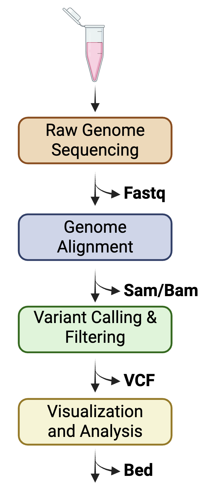
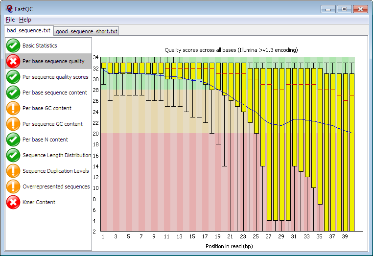
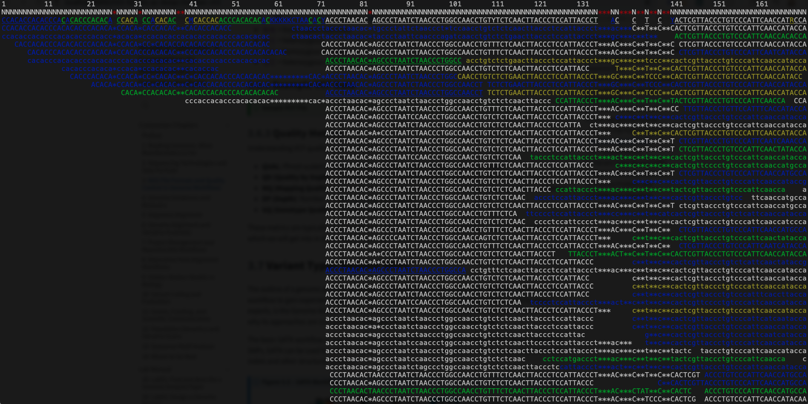
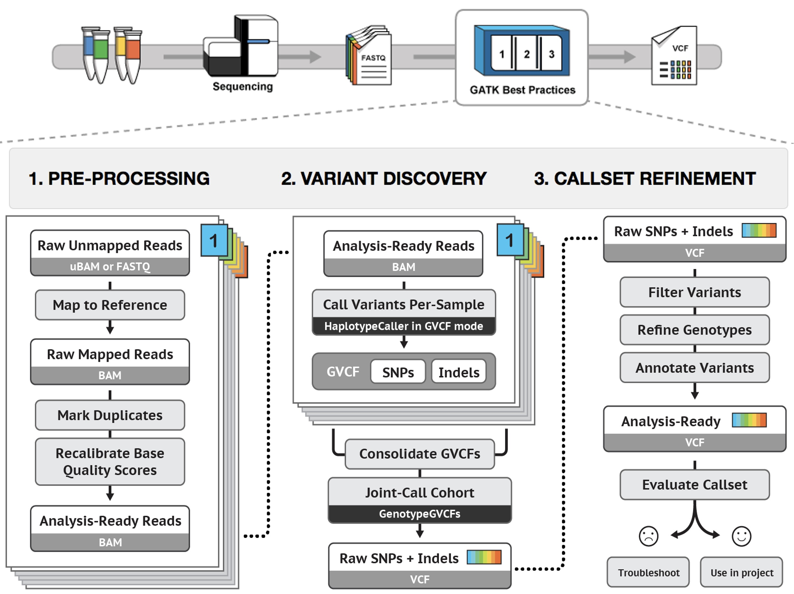

| Column | Description |
|---|---|
| CHROM | Chromosome |
| POS | 1-based variant start position |
| ID | dbSNP rsID or other identifier |
| REF | Reference allele |
| ALT | Alternate allele(s), comma-separated |
| QUAL | Phred-scaled quality score |
| FILTER | PASS if passes filters, or filter names |
| INFO | Semicolon-separated annotation fields |
| FORMAT | Colon-separated format of sample fields |
3 File Formats and Quality Control in Genome Workflows
3.1 Introduction to Genome File Formats
Next-generation sequencing (NGS) generates massive datasets that flow through standardized workflows from raw reads to biological insights1. Understanding file formats is essential for experimental design, as each format encodes metadata critical for downstream analysis decisions.
Figure Figure 3.1 shows the standard NGS pipeline, where FASTQ files capture raw sequencing data, SAM/BAM store alignments, and VCF summarizes variants.
NoteFigure 3.1 – NGS Workflow

Workflow for next-generation sequence experiments: from experimental design to data analysis with the standard file formats for each step. Each file format is described in depth in this chapter and in the table below. Created with BioRender.com.
Additionally, visualizing next-generation sequence data as well as genomic arithmetic can be done using genome viewer softwares, such as Integrated Genome Viewer (IGV), which we will cover later in this course. Another common file format in genomics is the BED format, which can be used with genome views, to perform various genome analyses, and to make custom tracks in genome browsers.
The goal of this chapter is to familiarize you with these four major file formats, which are reviewed in this chapter:
3.1.1 Common Genome Analysis File Formats
| Format | Acronym | Description | Primary Toolkit(s) |
|---|---|---|---|
| FASTA | FASTA | Text-based format for representing nucleotide or protein sequences with sequence identifiers | Biopython, BioPerl, seqtk, samtools faidx, EMBOSS |
| FASTQ | FASTQ | Extension of FASTA that includes per-base quality scores from sequencing instruments | FastQC, Trimmomatic, cutadapt, seqtk |
| SAM/BAM | Sequence Alignment/Map (Binary) | Stores aligned sequence reads to a reference genome; BAM is compressed binary version | SAMtools, Picard, GATK, sambamba |
| VCF/BCF | Variant Call Format (Binary) | Describes genetic variations including SNPs, indels, and structural variants; BCF is binary version | BCFtools, GATK, VCFtools, vcflib, R: VariantAnnotation, vcfR |
| BED | Browser Extensible Data | Tab-delimited format for genomic intervals and annotations (chromosome, start, end) | BEDtools, UCSC tools, pybedtools, R: GenomicRanges, rtracklayer |
3.1.1.1 Additional Common Formats covered later
| Format | Acronym | Description | Primary Toolkit(s) |
|---|---|---|---|
| GFF/GTF | General Feature Format / Gene Transfer Format | Annotation formats describing genomic features like genes, transcripts, and exons | gffread, bedtools, AGAT |
| CRAM | CRAM | Highly compressed alternative to BAM with reference-based compression | SAMtools, htslib |
| bigWig/bigBed | - | Indexed binary formats for dense continuous data (bigWig) and interval data (bigBed) | UCSC tools (bigWigToBedGraph), deepTools |
NoteLab connections
This chapter’s file formats and QC concepts feed directly into the first two labs:
- Lab 1 asks you to identify how published genome analysis papers report assembly metrics and QC, and to relate those choices back to FASTQ, BAM, and VCF concepts.
- Lab 2 asks you to design a genome project that makes concrete decisions about coverage, platforms, and workflows—decisions that will be encoded in FASTQ, BAM, VCF, and BED files.
3.2 FASTA: The Foundation of Sequence Data
Last chapter discussed Sanger sequencing and the generation of chromatograms—the colorful trace files produced by these sequencing instruments. While chromatograms preserve valuable quality information about individual sequencing reactions, they are impractical for computational analysis and database storage. This challenge led to the development of text-based sequence formats that could efficiently represent biological sequences while remaining human-readable and computationally tractable. The most fundamental and enduring of these formats is FASTA.
The FASTA format was developed in 1985 by William R. Pearson and David J. Lipman at the National Institutes of Health2,3. Originally created for their FASTP protein sequence similarity search program, the format was designed to handle the exponentially growing genetic databases of the 1980s when computer memory and processing speed were severely limited. The name “FASTA” stands for “FAST-All,” reflecting the program’s ability to handle both protein (FAST-P) and nucleotide (FAST-N) sequences.
3.2.1 FASTA File Structure
A FASTA file consists of one or more sequence records, each with two components:
1. Definition line (header):
- Begins with
>character - First word (no spaces) is the sequence identifier
- Remaining text is optional description
- Must be unique within the file
2. Sequence data:
- Uses standard IUPAC single-letter codes
- Typically wrapped to 60-80 characters per line (for readability)
- Case-insensitive (though lowercase sometimes indicates masked/repeat regions)
- Whitespace and numbers are ignored
FASTA files store only sequence data, not quality scores. Additionally, compression with gzip is common for large genome FASTA files, and many bioinformatics tools can read compressed FASTA files directly (.fasta.gz or .fa.gz).
3.2.2 From Individual Sequences to Genomic Scale
While FASTA files are plain text and viewable in any text editor, specialized tools enhance their utility. In the next chapter on Genome Browsers, we will install AliView, a cross-platform tool that can visualize FASTA files along with other sequence formats. AliView is particularly useful for viewing multiple sequence alignments and comparing sequences side-by-side.
The evolution from Sanger sequencing chromatograms to FASTA files to modern high-throughput formats reflects the scaling challenges in genomics. Where a single Sanger reaction produced one chromatogram file (~1 KB) representing ~800 bp of sequence, modern Illumina sequencing produces billions of reads requiring formats like FASTQ (for raw reads) and BAM (for alignments). Yet FASTA remains the standard for reference genomes, gene sequences, and protein databases—a testament to the format’s elegance and utility established nearly 40 years ago.
3.3 FASTQ: Raw Sequencing Reads
When genomic DNA is sequenced, raw image files are typically generated that are used to interpret which nucleotide is called in a given fragment or “read”. For most users, the FASTQ files (rather than the underlying image files) represent the raw reads from which other analyses are performed. Like the FASTA format, the FASTQ format includes a sequence string, consisting of the nucleotide sequence of each read. FASTQ also includes an associated quality score for every base.
FASTQ extends FASTA by adding per-base quality scores, forming the foundation of NGS analysis. Each record spans four lines1,4:
- Header (
@): Encodes rich metadata about sequencing conditions - Sequence: Raw nucleotides (A/C/G/T/N)
- Separator (
+): Optional repeat of header - Quality scores: ASCII-encoded Phred values
Each FASTQ file has records that are in blocks four lines long. The first line, beginning with the @ symbol, identifies the record. It may optionally include information about the sequence length or the machine used for sequencing. The second line has the sequence (in upper case), including the nucleotides G, A, T, C, and (as is the case here in the second position) there may be an N for unknown nucleotide. The third line begins with the + symbol and typically contains just that character (as in this case), or it can have more information. The fourth line includes the quality scores corresponding to every base. Each quality score is assigned a single character, and the entire quality score string must equal the length of the sequence string.
TipSample FASTQ entry
A four-line FASTQ entry showing a single read of a genome sequenced sample:
@SRR1693691.1 HWI-ST591:122:D19EFACXX:1:1101:1948:2137 length=75
CTATAGATCGACGCATATGTATTATCTTAAATAGGTTGCAATATATTATTATTTTTTAACATTTATTGCGATGCT
+SRR1693691.1 HWI-ST591:122:D19EFACXX:1:1101:1948:2137 length=75
?@@DFDDFHA<CDHGIGJIHGHJIGIJJGIIIICHGHJJIGIHGHIJHIJGIJJJIIGGGIIGJGIDEDH<?BEEThis represents a single Illumina sequencing read of 75 base pairs. The first line gives the header, the next the sequence, the next repeats the header, and the last line is hte ASCII-encode Phred quality scores for each position.
3.3.1 FASTQ Header Format
FASTQ headers contain important metadata about each sequencing read and typically uses colons (:) as delimiters. However, the exact format has evolved over time as Illumina updated their sequencing platforms. Understanding these variations is important when working with data from different sources so that reads can be paired correctly, quality control tracks flowcell lanes properly, and to ensure tool compatibility. Generally, Illumina headers contain important metadata about the sequencing run, such as instrument, run, flowcell, lane, etc.1.
For example, imagine the first line of the FastQ file looks something like this:
“@HS2000-306_201:6:1204:19922:79127/1”
This header string is an example of the modern Illumina FASTQ header fields (Casava 1.8+) and reveals the following metadata of the sequencing reads in the corresponding file:
| Information in header | Interpretation |
|---|---|
| HS2000-306_201 | the unique instrument name |
| 6 | flowcell lane |
| 1204 | tile number within the flowcell lane |
| 19922 | x-coordinate of the cluster within the tile |
| 79127 | y-coordinate of the cluster within the tile |
| 1 | the member of a pair, 1 or 2 (paired-end) |
When data is downloaded from NCBI’s Sequence Read Archive (SRA), or from older Illumina platforms, the header format differs, as you might notice in the example FASTQ entry above.
SRA Format in example above:
- Begins with SRA accession number (e.g., SRR1693691) followed by the original Illumina header
- The SRA accession is followed by a period and read number (
.1or.2for paired reads) with a space before the instrument name instead of a colon - May include additional metadata like
length=75at the end - Original Illumina information preserved after the SRA identifier
- Older formats may also include a flowcell ID (e.g., D19EFACXX) not present in modern format
The specific metadata encoded in the identifier varies by sequencing platform and processing pipeline, but the fundamental purpose remains the same: uniquely identifying each sequencing read and providing traceability to its origin on the sequencer.
3.3.2 Phred Quality Scores
PHRED scores were introduced in 1988 by Phil Green and colleagues to describe base quality scores from Sanger sequencing. This definition is used in the Sanger FASTQ format. Characters are stored as ASCII printable characters 33–126 (i.e., with an ASCII offset of 33) so the range of possible quality scores is 0 to 93. These are listed in Figure 9.8. A value of 93 corresponds to a probability of 10^–9.3 that a base call occurred by chance, that is, the read is extremely likely to be correct. At Q30 there is a 1:1000 (i.e., 10–3) error rate, a threshold that is often set as a minimum for high-quality reads.
Quality scores use Phred scale: \(Q = -10\log_{10}(P_e)\) where \(P_e\) is error probability1. ASCII encoding adds +33 offset for printable characters:
!) through 126 (~), which corresponds to Phred scores 0 through 93. Adapted from http://www.lookuptables.com. Gray entries are non-printing or separator characters; red entries are printable ASCII symbols used in FASTQ quality encoding.
| Dec | Char | Phred+33 | Dec | Char | Phred+33 | Dec | Char | Phred+33 | Dec | Char | Phred+33 |
|---|---|---|---|---|---|---|---|---|---|---|---|
| 0 | Non-printing | 32 | Space | 64 | @ | 31 | 96 | ` | 63 | ||
| 1 | Non-printing | 33 | ! | 0 | 65 | A | 32 | 97 | a | 64 | |
| 2 | Non-printing | 34 | " | 1 | 66 | B | 33 | 98 | b | 65 | |
| 3 | Non-printing | 35 | # | 2 | 67 | C | 34 | 99 | c | 66 | |
| 4 | Non-printing | 36 | $ | 3 | 68 | D | 35 | 100 | d | 67 | |
| 5 | Non-printing | 37 | % | 4 | 69 | E | 36 | 101 | e | 68 | |
| 6 | Non-printing | 38 | & | 5 | 70 | F | 37 | 102 | f | 69 | |
| 7 | Non-printing | 39 | ’ | 6 | 71 | G | 38 | 103 | g | 70 | |
| 8 | Non-printing | 40 | ( | 7 | 72 | H | 39 | 104 | h | 71 | |
| 9 | Non-printing | 41 | ) | 8 | 73 | I | 40 | 105 | i | 72 | |
| 10 | Non-printing | 42 | * | 9 | 74 | J | 41 | 106 | j | 73 | |
| 11 | Non-printing | 43 | + | 10 | 75 | K | 42 | 107 | k | 74 | |
| 12 | Non-printing | 44 | , | 11 | 76 | L | 43 | 108 | l | 75 | |
| 13 | Non-printing | 45 | - | 12 | 77 | M | 44 | 109 | m | 76 | |
| 14 | Non-printing | 46 | . | 13 | 78 | N | 45 | 110 | n | 77 | |
| 15 | Non-printing | 47 | / | 14 | 79 | O | 46 | 111 | o | 78 | |
| 16 | Non-printing | 48 | 0 | 15 | 80 | P | 47 | 112 | p | 79 | |
| 17 | Non-printing | 49 | 1 | 16 | 81 | Q | 48 | 113 | q | 80 | |
| 18 | Non-printing | 50 | 2 | 17 | 82 | R | 49 | 114 | r | 81 | |
| 19 | Non-printing | 51 | 3 | 18 | 83 | S | 50 | 115 | s | 82 | |
| 20 | Non-printing | 52 | 4 | 19 | 84 | T | 51 | 116 | t | 83 | |
| 21 | Non-printing | 53 | 5 | 20 | 85 | U | 52 | 117 | u | 84 | |
| 22 | Non-printing | 54 | 6 | 21 | 86 | V | 53 | 118 | v | 85 | |
| 23 | Non-printing | 55 | 7 | 22 | 87 | W | 54 | 119 | w | 86 | |
| 24 | Non-printing | 56 | 8 | 23 | 88 | X | 55 | 120 | x | 87 | |
| 25 | Non-printing | 57 | 9 | 24 | 89 | Y | 56 | 121 | y | 88 | |
| 26 | Non-printing | 58 | : | 25 | 90 | Z | 57 | 122 | z | 89 | |
| 27 | Non-printing | 59 | ; | 26 | 91 | left bracket | 58 | 123 | { | 90 | |
| 28 | Non-printing | 60 | < | 27 | 92 | \ | 59 | 124 | | | 91 | |
| 29 | Non-printing | 61 | = | 28 | 93 | right bracket | 60 | 125 | } | 92 | |
| 30 | Non-printing | 62 | > | 29 | 94 | ^ | 61 | 126 | ~ | 93 | |
| 31 | Non-printing | 63 | ? | 30 | 95 | _ | 62 | 127 | DEL |
Because genome sequencing has so much data, the cutoffs for Phred scores require added stringency. As is shown in the table below, a typical quality score of 20, which is recommended in most pipelines, ensures a 99% accuracy. Still, this equates to ~100 million sequencing errors in a standard dataset of 10 billion base pairs of DNA. Later, in Chapter 10, we will discuss variant filtering in more detail where additional parameters are used to filter data beyond simply Phred Quality scores of individual base calls.
| Phred Quality Score | Probability of Incorrect Base Call | Base Call Accuracy |
|---|---|---|
| 10 | 1 in 10 | 90% |
| 20 | 1 in 100 | 99% |
| 30 | 1 in 1,000 | 99.9% |
| 40 | 1 in 10,000 | 99.99% |
| 50 | 1 in 100,000 | 99.999% |
| 60 | 1 in 1,000,000 | 99.9999% |
3.4 Quality Control: FastQC Interpretation
Several packages are useful to assess the quality of the sequence data. There are many types of sequencing errors:
Errors typically increase as a function of read length. For example, for Illumina technology, with each increasing cycle it becomes increasingly difficult to differentiate the signal to noise ratio for which nucleotide has been incorporated.
Errors occur as a function of GC content.
Errors may occur in homopolymer positions. Both pyrosequencing and Ion Torrent technologies are susceptible to this.
FastQC software (5) provides quality control statistics. Data are imported from FASTQ files, and are then analyzed for qulality. The output includes the following:
Basic statistics. This includes information such as the range of sequence lengths and the percent GC content.
Per base sequence quality. This shows quality scores (y axis) versus base position (x axis).
Per sequence quality scores shows the number of sequences (y axis) versus mean sequence quality (Phred score; x axis).
Overrepresented sequences. You can copy these sequences and save them to a text file. You can then try BLAT (particularly if you know the species of the overrepresented sequences), BLASTN (to search for matches across species), batch BLAST, or other tools.
k-mer content: this shows data for a series of 5-mers (strings of 5 nucleotides) plotted by relative enrichment (y axis) versus position in read (in base pairs; x axis). The expected 5-mer frequency (determined from the base composition of the entire sequence) can be compared to the observed frequency. k-mer counts may be reduced (e.g., when poor quality reads reduce the counts for duplicated sequences) or enriched (e.g., when 5-mers are overrepresented at particular locations along a read, such as in the vicinity of a tag added to the 5′ end of sequencing reads).
NoteFigure 3.2 – FastQC Sample Output

Sample FastQC output showing a sharp decline in Phred Quality scores along sequence length. This is indicated with a red X in the main panel and indicates a failed quality check. This would typically indicate that trimming of read ends is required to improve overall quality of read data prior to alignment. Source
- Per base sequence quality: Boxplots by position; expect Q>30 early, decline to Q20+ at ends
- Per base sequence content: Even A/C/G/T; 5’ bias = adapters
- Adapter content: Rising % indicates contamination
- Sequence duplication: >50% duplicates flags PCR bias
TipCoverage Calculation using FastQC or Samtools
Read depth (or depth of coverage) is a basic design consideration. If a library is sequenced more often (e.g., analyzing it on multiple lanes of a flow cell) this will offer greater depth and more statistical power to detect variants. At the same time, obtaining deeper coverage is relatively expensive. For a typical whole-genome sequence using Illumina technology that generates 150 nucleotide paired end reads, coverage of 30× to 50× is obtained, meaning that on average any given base in the genome is covered by 30–50 independent sequencing reads. For whole-exome sequencing (which often spans ∼50 megabases or 1–2% of the genome), depth of coverage is often 100× or more. For targeted sequencing, depth of sequencing ranges from 5× to 30× depending on factors such as the number of samples that are run simultaneously.
The redundancy of coverage c is a function of the number of reads N, the average length of each read L, and the length of the region (e.g., genome G) being sequenced1:
Coverage = \(\frac{N \times L}{G}\) where \(G\) = genome size.
Using Samtools depth to calculate coverage: SAMtools is a library and a software package (Li et al., 2009). We can use it to analyze alignments in the SAM/BAM input, accomplishing various tasks. For example, the tool samtools depth is used to give a coverage amount for EVERY position in the genome. Lucky for you it is in a column style format with the following columns:
- Column 1: ID
- Column 2: Genomic position
- Column 3: No of reads covering that position
Using a simple awk command, we can calculate the average coverage using the third column:
samtools depth *bamfile* | awk '{sum+=$3} END { print "Average = ",sum/GENOME_SIZE}'I also recommend calculating genome size directly as this output does not list sites with zero coverage. While this is less of an issue with your small yeast genomes, for larger genomes it matters. Also note that we have used the masked version of the genome. This simply converts all sites in the genome file that are known to be repetitive (thus difficult to map for short reads) to N’s. These sites in particular are expected to have zero coverage as well.
You can do this using awk and the file “sacCer3.fa.masked.fai” which has as its second column the total number of bases on each chromosome.
Standard Deviation: Though not required, you can also calculate standard deviation to get an idea of how large of a range in coverage exists across your sample. Try using awk and the formula for standard deviation to accomplish this.
#hint you will need both the sum and the squared sum:
awk '{sum+=$3; sumsq+=$3*$3} END {print "Stdev = ",sqrt(sumsq/GENOME_SIZE - (sum/GENOME_SIZE)**2)}' depth.output3.5 SAM/BAM: Aligned Reads
The next major step in a basic genome analysis pipeline is alignment, which we will go into a lot of depth in subsequent chapters. When FastQ files are aligned to a reference genome, the output is a SAM (Sequence Alignment/Map) file. This file format is a compressed file that stores read alignments. It can be further compressed into its binoary form BAM1. Finally, an even more compressed version is a CRAM (Compressed Reference-oriented Alignment Map) file which was introduced in 2011. CRAM is a compressed columnar file format for storing biological sequences aligned to a reference sequence. For the purposes of this chpater, we will focus on the SAM format. BAM files cannot be directly viewed due to their binary nature.
NoteLab connections
In Lab 4 you will provide a practical opportunity to have hands-on experience working with raw fastq files on the Alabama Super Computer. You will also experience moving between these formats as you generate a bam alignment. You will also index a fasta formatted genome file.
This upcoming lab will also allow you to use popular bioinformatics tools to both generate these types of files and perform standard quality control analysis. You will also first encounter the yeast genomics dataset we will be using throughout the semester and be able to practice interpreting QC outputs for a real dataset6. See Appendix C for more detail.
3.5.1 The SAM/baM Format and SAMtools
The SAM (sequence alignment/map) format is commonly used to store next-generation sequence alignments. SAM files can be easily converted to the BAM (binary alignment/map) format. BAM is a binary representation of SAM, compressed by the BGZF library, and contains the same information as the SAM file. Because they are easily interchangeable, we may refer to the SAM/BAM format. This format is very popular, with many datasets available in repositories (such as the Sequence Read Archive at NCBI, the 1000 Genomes Project, and the Cancer Genome Atlas).
The SAM format includes a header section (having lines beginning with the character @) and an alignment section. The file is tab-delimited, and there are 11 mandatory fields (Table 9.4) which we examine in our autism panel (Fig. 9.13). We use the samtools view command to display the first of over a million rows (each row corresponding to a read that has been aligned to a reference genome). Twelve fields are shown, including the sequence (beginning AATCT…) followed by the corresponding quality scores. The CIGAR string refers to a notation system for variants. Here string “148M2S” shows 148 matches and 2 soft-clipped (unaligned) bases. Standard CIGAR operations are M (match), I (insertion), and D (deletion). Extended CIGAR options are N (skipped bases on reference), S (soft clipping), H (hard clipping), and P (padding). SAMtools is a library and a software package (Li et al., 2009). We can use it to analyze alignments in the SAM/BAM input, accomplishing the following tasks:
- convert from other alignment formats, or between SAM and BAM formats;
- sort and merge alignments;
- index alignments (once sorted, BAM file can be indexed generating a BAI file used in downstream analyses);
- view alignments in the pileup format (as shown below with the samtools view command);
- remove PCR duplicates (this procedure, called duplicate marking or “dedupping,” removes reads that are redundant); and
- call two classes of variants: single-nucleotide polymorphisms (SNPs) and small indels.
TipSample BAM File
Using SAMtools to view sequence reads from a BAM file at genomic coordinates of interest. By using the samtools tview command you enable a genome-wide view of the reads. Using commands accessed via a help menu, you can view the same reads colored by (a) base quality or (b) mapping quality. The read depth is relatively low to the left side. The quality scores are colored blue (for 0–9), green (10–19), yellow (20–29), or white (≥30). Underlining represents secondary or orphan reads. This viewer is useful to quickly assess the quality at genomic loci of interest, such as positions having single-nucleotide variants.

While it is not typical to view BAM files natively, it is helpful to review the anatomay of a sam file and the various ways to view this file format using the bioinformatics software samtools.
NoteTable 3.1 – Mandatory Fields in a SAM/BAM Alignment Record
| Col | Field | Type | Description |
|---|---|---|---|
| 1 | QNAME | String | Query template name — the read identifier from the sequencer |
| 2 | FLAG | Int | Bitwise flag encoding alignment properties (paired, reverse strand, unmapped, etc.) |
| 3 | RNAME | String | Reference sequence name (chromosome or contig) where the read aligned |
| 4 | POS | Int | 1-based leftmost mapping position on the reference |
| 5 | MAPQ | Int | Mapping quality — phred-scaled probability that the alignment position is wrong |
| 6 | CIGAR | String | CIGAR string encoding match, insertion, deletion, and soft-clip operations |
| 7 | RNEXT | String | Reference name of the mate/next read in a paired-end pair (= if same chromosome) |
| 8 | PNEXT | Int | Position of the mate/next read |
| 9 | TLEN | Int | Observed template length (insert size); negative for the reverse-strand read of a pair |
| 10 | SEQ | String | Segment sequence of the read (forward strand as aligned) |
| 11 | QUAL | String | ASCII-encoded Phred base quality scores (Phred+33 offset) |
The bioinformatics tool SAMtools is a suite of programs for interacting with high-throughput sequencing data8. It consists of three separate repositories:
- Samtools: Reading/writing/editing/indexing/viewing SAM/BAM/CRAM format
- BCFtools: Reading/writing BCF2/VCF/gVCF files and calling/filtering/summarising SNP and short indel sequence variants
- HTSlib: A C library for reading/writing high-throughput sequencing data
Samtools and BCFtools both use HTSlib internally, but these source packages contain their own copies of htslib so they can be built independently.
These can be used on the HPC which we will do in labs this semester. But you can also install these locally. On a Mac, you may use the package manager HomeBrew to install samtools. If you are on Windows, first install WSL (Windows Subsystem for Linux) to get a full Linux environment. Then, the easiest approach would be to use a pacakge manager like conda which will also handle dependencies automatically.
TipVerification of Sam/Bam files using Samtools
Another SAMtools tool, the samtools flagstat program is a very useful way to analyze a bam file. From samtools manual it describes flagstat’s function as:
Does a full pass through the input file to calculate and print statistics to stdout. Provides counts for each of 13 categories based primarily on bit flags in the FLAG field. Each category in the output is broken down into QC pass and QC fail, which is presented as “#PASS + #FAIL” followed by a description of the category. The first row of output gives the total number of reads that are QC pass and fail (according to flag bit 0x200). For example: 122 + 28 in total (QC-passed reads + QC-failed reads) Which would indicate that there are a total of 150 reads in the input file, 122 of which are marked as QC pass and 28 of which are marked as “not passing quality controls”
Sample output file from running flagstat on a bam file:
20968800 + 0 in total (QC-passed reads + QC-failed reads)
0 + 0 duplicates
20968800 + 0 mapped (100.00%:nan%)
20968800 + 0 paired in sequencing
11431237 + 0 read1
9537563 + 0 read2
71098 + 0 properly paired (0.34%:nan%)
6633306 + 0 with itself and mate mapped
14335494 + 0 singletons (68.37%:nan%)
0 + 0 with mate mapped to a different chr
0 + 0 with mate mapped to a different chr (mapQ>=5)3.6 VCF: Variant Call Format
Once FASTQ files from your sample have been aligned to a reference genome, it may be assumed that variants (both single-nucleotide variants and indels) can be called by inspecting the alignment and tabulating the differences. The problem with this approach is that many sources of errors occur in the process of sequencing and performing alignment: bias may occur in how libraries are prepared and amplified; sequencing technologies all have associated error rates; and mapping has error rates.
VCF tabulates variants post-alignment (GATK/SAMtools)1,9.The VCF format was developed under the 1000 Genomes Project and is currently maintained by the Global Alliance for Genomics & Health (GA4GH). For practical guidance on working with VCF files using BCFtools, see10.
NoteLab connections
In Lab 7 you will have an opportunity to continue your practical exposure to these file formats as you take the next step in your genome analysis of the yeast genomics dataset. On the Alabama Super Computer, you will get hands-on experience using GATK to call variants from the BAM file you generate in Lab 4 creating a VCF file.
This later lab will also guide you in filtering and evaluating variants for quality. You can refer back to this chapter whenever you encounter new datasets or need to interpret QC plots and file structures in labs.
3.6.1 VCF File Format Details
A VCF file consists of:
- Meta-information lines (starting with
##) that define file format, reference genome, and field descriptions - Header line (starting with
#CHROM) that names the columns - Data lines containing variant information
9 mandatory columns + sample columns:
Genotype encoding:
0/0= homozygous reference0/1= heterozygous1/1= homozygous alternate1/2= heterozygous with two different alternate alleles
3.6.2 Example VCF Data
TipSample VCF File
Below is an example VCF file showing single nucleotide variants (SNVs) from chromosome I of a yeast genome:
##fileformat=VCFv4.2
##ALT=<ID=NON_REF,Description="Represents any possible alternative allele at this location">
##FILTER=<ID=LowQual,Description="Low quality">
##FORMAT=<ID=AD,Number=R,Type=Integer,Description="Allelic depths for the ref and alt alleles">
##FORMAT=<ID=DP,Number=1,Type=Integer,Description="Approximate read depth">
##FORMAT=<ID=GQ,Number=1,Type=Integer,Description="Genotype Quality">
##FORMAT=<ID=GT,Number=1,Type=String,Description="Genotype">
##FORMAT=<ID=PL,Number=G,Type=Integer,Description="Normalized Phred-scaled likelihoods">
##INFO=<ID=AC,Number=A,Type=Integer,Description="Allele count in genotypes">
##INFO=<ID=AF,Number=A,Type=Float,Description="Allele Frequency">
##INFO=<ID=AN,Number=1,Type=Integer,Description="Total number of alleles">
##INFO=<ID=DP,Number=1,Type=Integer,Description="Approximate read depth">
##INFO=<ID=MQ,Number=1,Type=Float,Description="RMS Mapping Quality">
##INFO=<ID=QD,Number=1,Type=Float,Description="Variant Confidence/Quality by Depth">
##contig=<ID=chrI,length=230218>
##source=HaplotypeCaller
#CHROM POS ID REF ALT QUAL FILTER INFO FORMAT SAMN03152093
chrI 136 . G A 812.01 . AC=1;AF=1.00;AN=1;DP=25;MQ=46.32;QD=32.48 GT:AD:DP:GQ:PL 1:4,21:25:99:822,0
chrI 349 . C T 191.01 . AC=1;AF=1.00;AN=1;DP=17;MQ=46.06;QD=11.24 GT:AD:DP:GQ:PL 1:6,11:17:99:201,0
chrI 457 . CA C 194.01 . AC=1;AF=1.00;AN=1;DP=12;MQ=39.48;QD=32.33 GT:AD:DP:GQ:PL 1:0,6:10:99:204,0
chrI 610 . G A 80.01 . AC=1;AF=1.00;AN=1;DP=2;MQ=33.14;QD=28.73 GT:AD:DP:GQ:PL 1:0,2:2:90:90,0Key observations:
- Position 136: G→A SNV with high quality (QUAL=812) and good mapping quality (MQ=46.32)
- Position 457: 2bp deletion (CA→C) representing an indel
- INFO field QD (Quality by Depth) helps assess variant confidence relative to coverage
- FORMAT GT field shows genotype:
1indicates homozygous alternate (haploid sample)
3.6.3 Quality Metrics
Understanding VCF quality fields is crucial for variant filtering:
- QUAL: Phred-scaled probability that the variant call is incorrect (higher is better)
- QD (Quality by Depth): QUAL/DP ratio; helps identify false positives from low-coverage regions
- MQ (Mapping Quality): Root mean square of mapping quality scores; indicates alignment confidence
- DP (Depth): Number of reads covering the position
- GQ (Genotype Quality): Confidence in the assigned genotype
These metrics are typically used together to filter high-confidence variants from sequencing artifacts, which we will get into in depth later in the course as part of Chapter 10.
3.7 Variant Types Beyond SNPs
The outline of a genome analysis workflow presented in Figure 9.6 is relatively simplistic. We will use that workflow to gain experience with basic data manipulation. A state-of-the-art workflow, used by many experts, is the Genome Analysis Toolkit (GATK;11,12). We show the GATK workflow in Figure 9.7, and explain why its approaches are crucial to sensitive, specific analyses of genome sequences.
The basic GATK workflow is used for variant discovery with the goal output being a VCF. But in addition to SNPs, GATK can be used to call other types of genomic variants. Specifically, GATK can be used to identify indels and other structural variants1:
NoteFigure 3.4 – GATK Workflow

GATK Best Practices (Figure @ref(fig:gatk-workflow)) is the best genome workflow for model organisms, and for modern human genomics. However, it may not be suitable for calling variants in non-model systems, which will be covered later in the course11,12. Each step in the GATK pipeline reduces the amount of data in a genome analysis, the goal is to improve the overall quality of the results that are filtered along the way. For example, we may expect to see up to 50% of the data is removed during a standard workflow from raw FastQ file to a VCF. This does not mean that your data are of poor quality of that your experimental design was flawed, but only that your resulting variants have been stringently filtered to be of the highest confidence. Adapted from Broad Institute GATK tutorial figures; reproduced for educational use.
3.7.1 Variant Types in VCF Files
VCF files can represent several types of genetic variation:
SNVs (Single Nucleotide Variants): Position 136 above shows a simple G→A substitution
Indels:
- Deletions: Position 457 shows a deletion where CA in the reference becomes C (one base deleted)
- Insertions: Can be represented as
A→ATAAATTTTTTwhere bases are added
TipAdditional Indel Examples
chrI 17290 . AACAC A 80.01 . AC=1;AF=1.00;AN=1;DP=4;MQ=36.85;QD=27.08;SOR=2.303 GT:AD:DP:GQ:PL 1:0,2:2:90:90,0
chrI 30097 . A ATAAATTTTTT 125.04 . AC=1;AF=1.00;AN=1;DP=3;MQ=26.04;QD=21.53;SOR=1.179 GT:AD:DP:GQ:PL 1:0,3:3:99:135,0
chrI 31122 . CATAT C 69.01 . AC=1;AF=1.00;AN=1;DP=6;MQ=60.00;QD=34.50;SOR=2.303 GT:AD:DP:GQ:PL 1:0,2:2:79:79,0- Position 17290: 4bp deletion (AACAC→A)
- Position 30097: 10bp insertion (A→ATAAATTTTTT)
- Position 31122: 4bp deletion (CATAT→C)
3.8 BED file format and BEDtools
The Browser Extensible Data (BED) format is a tab-delimited text format for storing genomic regions as coordinates and associated annotations. Originally developed during the Human Genome Project for the UCSC Genome Browser13, BED has become a de facto standard in bioinformatics for representing genomic intervals.
The key advantage of BED format is its use of genomic coordinates rather than sequences, which optimizes computational efficiency when comparing genomic regions. Its simplicity also makes it easy to manipulate using standard command-line tools, scripting languages, or specialized utilities like BEDTools14.
3.8.1 BED File Structure
A minimal BED file requires three tab-delimited fields:
| Column | Description | Example |
|---|---|---|
| chrom | Chromosome name | chr1 |
| chromStart | Start position (0-based) | 1000 |
| chromEnd | End position (1-based, exclusive) | 1500 |
Important: BED uses a 0-based coordinate system for the start position and a 1-based coordinate system for the end position. This means:
- The first nucleotide of a chromosome has
chromStart=0, chromEnd=1 - A feature’s length is simply
chromEnd - chromStart - The position chr1:1001-1500 in “human” coordinates becomes
chr1 1000 1500in BED format
The BED format supports up to 12 standard fields, with the first three being mandatory:
| Field | Name | Description |
|---|---|---|
| 4 | name | Feature name or identifier |
| 5 | score | Score (0-1000) |
| 6 | strand | Strand: + or - |
| 7 | thickStart | Start of thick drawing (e.g., coding region) |
| 8 | thickEnd | End of thick drawing |
| 9 | itemRgb | RGB color value (e.g., 255,0,0) |
| 10 | blockCount | Number of blocks (exons) |
| 11 | blockSizes | Comma-separated list of block sizes |
| 12 | blockStarts | Comma-separated list of block starts |
3.8.2 Example BED Files
TipSimple BED3 Format
A basic three-column BED file showing genomic intervals:
chr1 1000 1500
chr1 2000 2300
chr2 5000 5800
chrX 1000000 1001000This represents four genomic regions. The first spans 500 bp from position 1000 to 1499 on chromosome 1 (remember: end position is exclusive).
3.8.3 Working with BED Files: BEDTools
BEDTools14 is a powerful suite of utilities for performing “genome arithmetic” on BED files. These tools enable efficient comparison and manipulation of genomic features through set operations like intersect, merge, and complement. BEDTools can be combined with standard UNIX commands in pipelines, facilitating complex genomic analyses without requiring web-based tools or large data transfers.
3.8.4 BED Format in Other Tools
Beyond BEDTools, BED format is supported by numerous bioinformatics tools:
- UCSC Genome Browser tools: bedToBigBed, bigBedToBed for creating indexed binary formats
- R/Bioconductor:
rtracklayerfor importing/exporting BED files,GenomicRangesfor genomic interval operations - Python:
pybedtoolsprovides Python interface to BEDTools functionality - IGV (Integrative Genomics Viewer): Native support for BED track display
3.8.5 Connection to Genome Browsers
BED files serve as a fundamental format for displaying custom annotation tracks in genome browsers. The UCSC Genome Browser13 uses BED format extensively, allowing researchers to:
- Upload custom tracks for visualization alongside reference annotations
- Define track display properties through optional track lines
- Share results by hosting BED files on web servers
For large datasets, BED files can be converted to bigBed format15, a compressed, indexed binary format that enables rapid visualization of millions of features without uploading entire datasets to the browser.
As we transition to Chapter 4 on Genome Browsers, understanding BED format provides the foundation for effectively visualizing and interpreting genomic data. Genome browsers use BED-formatted tracks to display genes, regulatory elements, variants, and experimental results in their chromosomal context, making BED fluency essential for modern genomics research.
3.9 Practice Problem‑sets
The chapter mentions that Q20 is a recommended cutoff for typical sequencing projects, but that this still equates to ~100 million errors in a standard sequencing project. This was based on a dataset with 100 million 100 base pair reads, or 10 billion reads. Imagine you increased the stringency from 99% to 99.9% by imposing a Q30 cutoff instead. What would be the new number of expected sequencing errors resulting from this adjustment?
Quality control is the critical first step in any sequencing analysis. Different research environments (local computers, web platforms, command-line servers, R environments) offer different tools for QC analysis. To better understand the strengths and limitations of each approach, compare FastQC implementations across different platforms. To do this, search the SRA accession SRR518692 (Aeromonas hydrophila whole genome sequencing) which was sequenced here at Auburn. In class, we will run FastQC using the Galaxy Web Platform. Here, test out a local FastQC Installation (Mac/Windows). First, download FastQC for Mac/PC. Next, download the SRR518692 FASTQ files using Galaxy or SRA Toolkit. Third, run FastQC locally on the downloaded file. Compare the output to your Galaxy results from class.
As an extension of Problem #2, look up the genome size of the species Aeromonas hydrophila on NCBI. Then using the number of reads and the read length from the FastQC report, calculate the expected coverage of this sample.
As another example of tool implementation, try your hand at running FastQC using the R/Bioconductor Approach. There are several R pacakges that you can use. If you have installed FastQC, then you can use fastqcr. Alternatively, you can use an alternative pacakge called ShortRead. Once you have retrieved QC metrics using either R package, compare your results with that of Galaxy and FastQC locally. Also reflect on the difference in experience across these three platforms. Which was easiest to run? fastest? Which was easiest to interpret? Which one would you choose if you needed to run these QC metrics on a set of 100 fastqc files?
Look back at the Lab from Computational Biology where you learned to use AWK to manipulate VCF files. Now having learned more about this file format, why do you think a VCF file worked so well for this lab assignment working with the tool
awk?SAM/BAM CIGAR Strings: Alignment information encoded in SAM/BAM files use CIGAR strings. CIGAR (Compact Idiosyncratic Gapped Alignment Report) strings provide a compressed representation of how reads align to a reference genome. Given these CIGAR strings, decode what they mean: a).
148M2S(from chapter example); b).50M1I49M; c).75M5D25M; d).10S90M. Write out what they mean in plain English. How long is each read corresponding to each string? What types of potential variants do these reads indicate?
3.10 Reflection Questions
Format Evolution and Compression: The chapter describes the evolution from FASTA → FASTQ → SAM → BAM → CRAM, with each format adding information or improving compression. Explain the trade-offs between human readability and computational efficiency in this progression. Why do you think FASTA has remained the standard for reference genomes for 40 years despite being uncompressed text, while CRAM has largely replaced SAM/BAM for aligned reads?
Phred Quality Score as ASCII: In the FastQ file format, Phred quality scores are encoded as ASCII (+33 offset) rather than raw numbers. Why do you think this format is preferred?
Phred Quality Score Encoding: FASTQ format encodes Phred quality scores as single ASCII characters with a +33 offset (e.g., Q30 becomes ‘?’) rather than storing them as numeric values (e.g., “30”). Why do you think was this ASCII encoding scheme chosen? What benefits do you think this conversion has in terms of file compression? For example, why might the string “?????” (five Q30 scores) compress differently than “30,30,30,30,30”? Would ASCII encoding help or hurt compression? What are the trade-offs between human-readability and computational efficiency?
Different ASCII encoding: The +33 offset specifically makes quality scores printable characters (! through ~). The earlier Solexa/Illumina 1.0 format used +64 offset (@ through ~). What practical problems might arise from having two different encoding schemes in the field? How would you detect which encoding a file uses?
Coordinate Systems and Biological Meaning: BED format uses 0-based start positions but 1-based end positions (0-based, half-open intervals), while VCF uses 1-based positions for both start and end. Discuss why these different conventions exist and how they affect biological interpretation. What errors might occur if you incorrectly convert between these systems? Provide a specific example with coordinates.
3.11 References
1.
Pevsner, J. Bioinformatics and Functional Genomics. (Wiley, 2015).
2.
Lipman, D. J. & Pearson, W. R. Rapid and sensitive protein similarity searches. Science 227, 1435–1441 (1985).
3.
Pearson, W. R. & Lipman, D. J. Improved tools for biological sequence comparison. Proceedings of the National Academy of Sciences 85, 2444–2448 (1988).
4.
Cock, P. J. A., Fields, C. J., Goto, N., Heuer, M. L. & Rice, P. M. The Sanger FASTQ file format for sequences with quality scores, and the Solexa/Illumina FASTQ variants. Nucleic Acids Research 38, 1767–1771 (2010).
5.
6.
Burke, M. K., Liti, G. & Long, A. D. Standing Genetic Variation Drives Repeatable Experimental Evolution in Outcrossing Populations of Saccharomyces cerevisiae. Molecular Biology and Evolution 31, 3228–3239 (2014).
7.
Li, H. et al. The sequence alignment/map format and SAMtools. Bioinformatics 25, 2078–2079 (2009).
8.
Danecek, P. et al. Twelve years of SAMtools and BCFtools. GigaScience 10, giab008 (2021).
9.
Danecek, P. et al. The variant call format and VCFtools. Bioinformatics (Oxford, England) 27, 2156–2158 (2011).
11.
McKenna, A. et al. The Genome Analysis Toolkit: A MapReduce framework for analyzing next-generation DNA sequencing data. Genome Research 20, 1297–1303 (2010).
12.
DePristo, M. A. et al. A framework for variation discovery and genotyping using next-generation DNA sequencing data. Nature Genetics 43, 491–498 (2011).
13.
Kent, W. J. et al. The human genome browser at UCSC. Genome Research 12, 996–1006 (2002).
14.
Quinlan, A. R. & Hall, I. M. BEDTools: A flexible suite of utilities for comparing genomic features. Bioinformatics 26, 841–842 (2010).
15.
Kent, W. J., Zweig, A. S., Barber, G., Hinrichs, A. S. & Karolchik, D. BigWig and BigBed: Enabling browsing of large distributed datasets. Bioinformatics 26, 2204–2207 (2010).